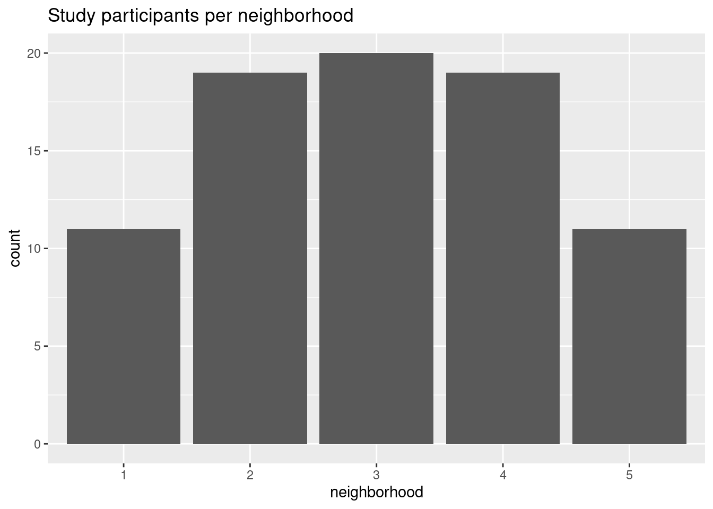
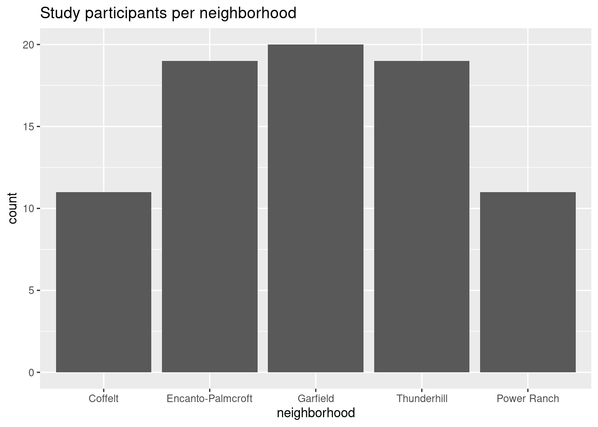
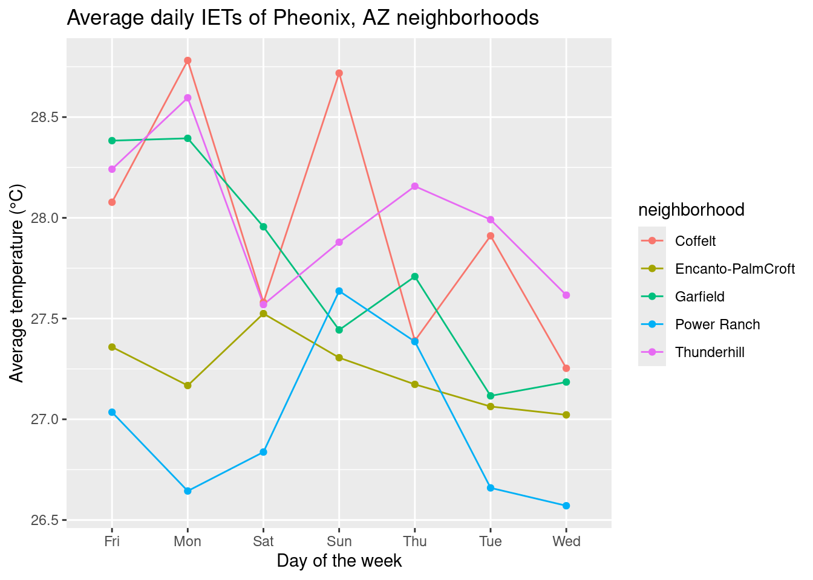
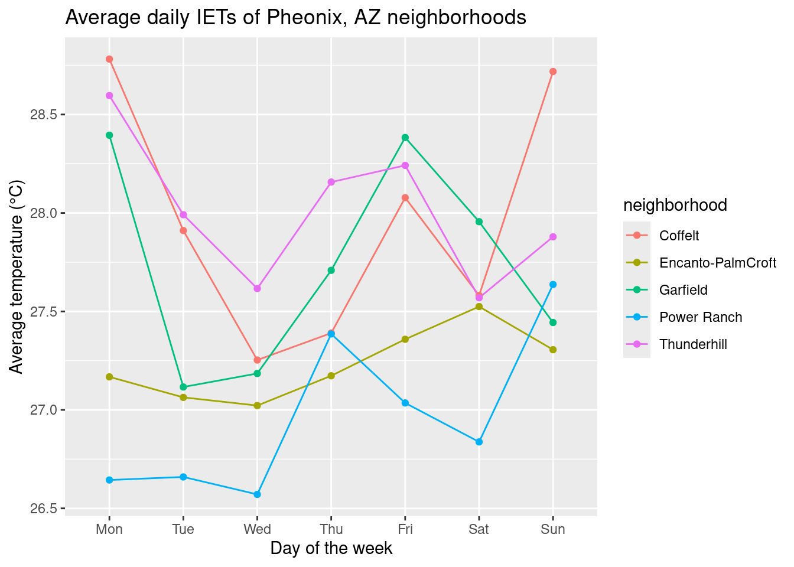

library(tidyverse)
temps <- read.csv("your/path/to/temperatures.csv", header = TRUE, sep = ",")Example Analysis: Temperatures
Preamble
This script will loosely follow the template document: it is more meant for you to get an idea of one way to approach the data processing and visualization! This analysis will primarily focus on using tidyverse tools (i.e. dplyr and ggplot).
For this dataset, the main skills we want you to practice are:
- Parsing strings:
Subject.IDandperiodcontain some valuable information that once parsed out, can make your analyses much more informative. - Working with
NAvalues: these can break code in unexpected ways, particularly when working with numeric data.
The research questions we will address are:
- Easier: How many participants were there for each neighborhood in the study?
- Harder: What was the daily average temperature for each neighborhood during the study period?
1. Load data and libraries
2. Format the Data
Skill: Parsing strings
There is useful information that is contained within the Subject.ID and period columns that would be nice to extract out. There are a few handy functions from the stringr package within the tidyverse that we can use.1 In particular, we will use str_sub() to tackle splitting the Subject.ID and str_split_fixed() to tackle the information contained within period.
Subject.ID has no actual delimiters aside from the positions of the characters (neighborhood in the 1st, subject ID in the 2nd), so we’ll use str_sub(). This function needs to know which string we are working on and the start and end positions of where it should extract: since we only want one character, the start and end positions will be the same.
In contrast, period has 2 pieces of information (the day of the week and the hours) separated by the ", " (comma-space). We will use str_split_fixed(), which needs to know the string we are working on, the separator, and how many pieces of information are separated by that separator pattern. Since this function returns an entire matrix, we will also specify which column of the matrix we want using our index operator ([,]).
temps <- temps |>
mutate(neighborhood = str_sub(Subject.ID, 1, 1),
id = str_sub(Subject.ID, 2, 2),
wkday = str_split_fixed(period, ", ", n = 2)[,1],
hrs = str_split_fixed(period, ", ", n = 2)[,2])Skill: Working with NA values
There is nothing explicit we will do about NA values here for now – just keep them in mind and we will handle them later when we visualize!
3. Visualize the Data
Easier
Research question
How many participants were there for each neighborhood in the study?
This question is “easier” to approach in the sense that there little additional data wrangling to do: we just need to summarize() the data. There is a helpful counting function from dplyr, n_distinct(), that we can use count the unique number of subject ids. Since we are looking at count data, we can use a bar graph.
# count participants
participants <- temps |>
group_by(neighborhood) |>
summarize(count = n_distinct(id))
# plot
ggplot(participants, aes(x = neighborhood, y = count)) +
geom_col() +
labs(title = "Study participants per neighborhood")
Let’s add in the neighborhood names from the metadata to make this graph a little clearer. Since x-axis values are discrete values, we will use scale_x_discrete() and specify the labels argument, which will make R rename the current x-axis labels with whatever you provide to the argument.
There are two ways to tell R what your new label values are:
labels = c("old_value1" = "new_value1", "old_value2" = "new_value2")labels = c("new_value1", "new_value2")
How does the second method work?
If using the latter method, how does R know what to assign to what? (e.g. how to assign “1” to “Coffelt”, etc?)
Simply, R assumes you are specifying the new values in the same order as the old values. To check the order of the old values, you can use the levels() and as.factor() functions like so: levels(as.factor(df$variable))
# double-check the order
levels(as.factor(temps$neighborhood))[1] "1" "2" "3" "4" "5"# better labels
ggplot(participants, aes(x = neighborhood, y = count)) +
geom_col() +
labs(title = "Study participants per neighborhood") +
scale_x_discrete(labels = c("Coffelt", "Encanto-Palmcroft", "Garfield", "Thunderhill", "Power Ranch"))
Harder
Research question
What was the daily average temperature for each neighborhood during the study period?
Since we know the figures look better with the proper neighborhood names, let’s replace them in our dataset first, before doing more analysis. There is a very handy dplyr function, case_when(), that works like an if_else() statement, where you can specify certain things to occur depending on if a certain condition is TRUE or FALSE.
The general usage is as so: case_when(<condition> ~ <outcome>). This function is convenient since you only need to think about the specific <condition> you need to get a certain <outcome>, and you do not necessarily need to address the other possible outcomes.
Additional comments on using
case_when()
Consider running mutate(feels_like = case_when(temperature > 27 ~ "hot") on this data: this would create a new column, feels_like, with the value “hot” when the value in temperature is above 27. However, since we did not specify the results for other outcomes (i.e. what value feels_like should take on when temperature is below 27), the rest of this column would fill with NAs.
Otherwise, this function is especially useful if you want to mutate() specific variables that depend on a complex set of conditionals/criteria (but we have a relatively simple case, here.)
# relabel neighborhoods
temps <- temps |>
mutate(neighborhood = case_when(neighborhood == 1 ~ "Coffelt",
neighborhood == 2 ~ "Encanto-PalmCroft",
neighborhood == 3 ~ "Garfield",
neighborhood == 4 ~ "Thunderhill",
neighborhood == 5 ~ "Power Ranch"))Now, we’ll calculate the average temperature for each neighborhood on each day of the week. Again, we will use summarize(), then check our math.
# calculate avg daily temps for each neighborhood
dailyavg <- temps |>
group_by(neighborhood, wkday) |>
summarize(avgtemp = mean(temperature))
dailyavg# A tibble: 35 × 3
# Groups: neighborhood [5]
neighborhood wkday avgtemp
<chr> <chr> <dbl>
1 Coffelt Fri NA
2 Coffelt Mon 28.8
3 Coffelt Sat NA
4 Coffelt Sun NA
5 Coffelt Thu NA
6 Coffelt Tue 27.9
7 Coffelt Wed 27.3
8 Encanto-PalmCroft Fri NA
9 Encanto-PalmCroft Mon NA
10 Encanto-PalmCroft Sat NA
# ℹ 25 more rowsWe can see we have gotten a lot of NA values! This is because not every temperature has a value: we will account for this by including the na.rm = TRUE argument.
# redo math
dailyavg <- temps |>
group_by(neighborhood, wkday) |>
summarize(avgtemp = mean(temperature, na.rm = TRUE))
dailyavg# A tibble: 35 × 3
# Groups: neighborhood [5]
neighborhood wkday avgtemp
<chr> <chr> <dbl>
1 Coffelt Fri 28.1
2 Coffelt Mon 28.8
3 Coffelt Sat 27.6
4 Coffelt Sun 28.7
5 Coffelt Thu 27.4
6 Coffelt Tue 27.9
7 Coffelt Wed 27.3
8 Encanto-PalmCroft Fri 27.4
9 Encanto-PalmCroft Mon 27.2
10 Encanto-PalmCroft Sat 27.5
# ℹ 25 more rowsThis looks better! Now we can plot: a line graph probably makes most sense to look at changes over the days of the week. Since we have so many variables (e.g. neighborhood and day of the week), R will have a hard time figuring out which points to connect, so we will also specify the group argument in aes().
# plot
ggplot(dailyavg, aes(x = wkday, y = avgtemp, color = neighborhood, group = neighborhood)) +
geom_line() + geom_point() +
labs(title = "Average daily IETs of Pheonix, AZ neighborhoods", x = "Day of the week", y = "Average temperature (°C)")
We can see that our days of the week do not look quite right… R is doing the “sensible” thing and listing them in alphabetical order, but we can specify the weekday order by using factor() and using the levels argument.
# reorder days of the week
dailyavg$wkday <- factor(dailyavg$wkday, levels = c("Mon", "Tue", "Wed", "Thu", "Fri", "Sat", "Sun"))
# plot again
ggplot(dailyavg, aes(x = wkday, y = avgtemp, color = neighborhood, group = neighborhood)) +
geom_line() + geom_point() +
labs(title = "Average daily IETs of Pheonix, AZ neighborhoods", x = "Day of the week", y = "Average temperature (°C)")
Code only
Code only
(Finalized code adjustments shown)
# read in data, load libraries
library(tidyverse)
temps <- read.csv("your/path/to/temperatures.csv", header = TRUE, sep = ",")
# wrangle
## parse out the subject and period data
temps <- temps |>
mutate(neighborhood = str_sub(Subject.ID, 1, 1),
id = str_sub(Subject.ID, 2, 2),
wkday = str_split_fixed(period, ", ", n = 2)[,1],
hrs = str_split_fixed(period, ", ", n = 2)[,2])
# visualize
## easier: plot participant counts
### count participants
participants <- temps |>
group_by(neighborhood) |>
summarize(count = n_distinct(id))
### double-check neighborhoods
levels(as.factor(temps$neighborhood))
### plot with better labels
ggplot(participants, aes(x = neighborhood, y = count)) +
geom_col() +
labs(title = "Study participants per neighborhood") +
scale_x_discrete(labels = c("Coffelt", "Encanto-Palmcroft", "Garfield", "Thunderhill", "Power Ranch"))
## harder: plot daily avg temps
### relabel neighborhoods
temps <- temps |>
mutate(neighborhood = case_when(neighborhood == 1 ~ "Coffelt",
neighborhood == 2 ~ "Encanto-PalmCroft",
neighborhood == 3 ~ "Garfield",
neighborhood == 4 ~ "Thunderhill",
neighborhood == 5 ~ "Power Ranch"))
### calculate avg daily temps for each neighborhood
dailyavg <- temps |>
group_by(neighborhood, wkday) |>
summarize(avgtemp = mean(temperature, na.rm = TRUE))
### reorder days of the week
dailyavg$wkday <- factor(dailyavg$wkday, levels = c("Mon", "Tue", "Wed", "Thu", "Fri", "Sat", "Sun"))
### plot
ggplot(dailyavg, aes(x = wkday, y = avgtemp, color = neighborhood, group = neighborhood)) +
geom_line() + geom_point() +
labs(title = "Average daily IETs of Pheonix, AZ neighborhoods", x = "Day of the week", y = "Average temperature (°C)")Look up
??stringr::stringrfor an overview of the package.↩︎